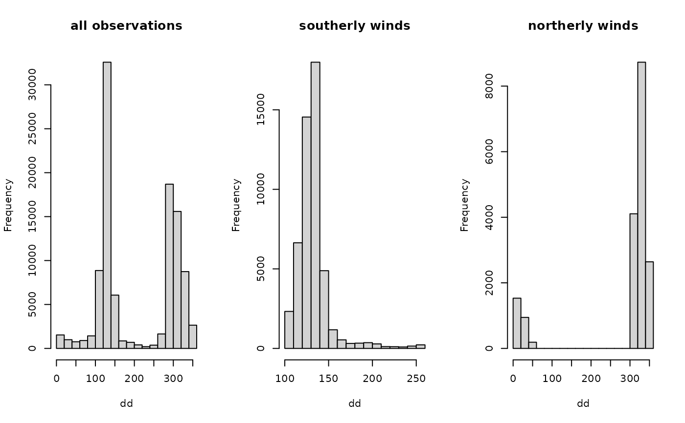

R/foehnix_filter.R
foehnix_filter.Rdfoehnix models allow to specify an optional
foehnix_filter. If a filter is given only a subset
of the data set provided to foehnix is used
for the foehn classification.
foehnix_filter(x, filter) # S3 method for foehnix.filter print(x, ...)
| x | object of class |
|---|---|
| filter | can be |
Returns a vector of integers corresponding to those rows in
the data set x which fulfill all filte criteria. If input
filter = NULL an integer vector 1:nrow(x) is returned.
A typical example is a wind direction filter such that only observations (times) are used where the observed wind direction was within a user defined wind sector corresponding to the wind direction during foehn events for a specific location.
However, the filter option allows to even implement complex filter rules if required. The 'Details' section contains further information and examples how this filter rules can be used.
Foehn winds often (not always) show a very specific wind direction
due to the canalization of the air flow trough the local topography. The
foehnix_filter option allows to subset the data according to a
user defined set of filters from simple filters to complex filters.
These filters classify each observation (each row in x) as
good (within filter), bad (outside filter), and ugly (at least one
variable required to apply the filter was NA).
No filter: If filter = NULL no filter will be applied and the whole
data set provided is used to do the foehn classification (all observations
will be treated as 'good').
Simple filter rules: The filter is a named list containing one or several
numeric vectors of length 2 with finite numeric values. The name of the
list element defines the column of the data set (input x), the
numeric vector of length 2 the range which should be used to filter the
data. This is the simplest option to apply the mentioned wind direction
filter. Examples:
filter = list(dd = c(43, 223)): applies the filter to
column x$dd. The filter classifies observations/rows
as 'good' (within filter) if x$dd >= 43 & x$dd <= 223.
filter = list(dd = c(330, 30): similar to the filter
rule above, allows to specify a wind sector going trough 0
(if dd is wind direction in degrees between [0, 360[).
The filter classifies observations/rows as 'good' (within filter)
if x$dd >= 330 | x$dd <= 30.
filter = list(dd = c(43, 223), crest_dd = c(90, 270):
two filter rules, one for x$dd, one for x$crest_dd.
The filter classifies observations/rows as 'good' (within filter)
if x$dd >= 43 & x$dd <= 223 AND x$crest_dd >= 330 | x$crest_dd <= 30.
If an observation/row does not fulfill one or the other rule
the observation/row is classified as 'bad' (outside filter), if
one of x$dd or x$crest_dd is NA the
corresponding observation/row will be classified as 'ugly'.
Filters are not restricted to wind direction (as shown in the examples above)!
Custom filter functions: Instead of only providing a segment/sector defined
by two finite numeric values (see 'Simple filter' above) a named list of #'
functions can be provided. These functions DO HAVE TO return a vector of #'
logical values (TRUE (good),FALSE (bad), or NA (ugly)) #'
of length nrow{x}. If not, an error will be thrown. The function will
be applied to the column #' specified by the name of the list element. Some
examples:
filter = list(dd = function(x) x >= 43 & x <= 223):
The function will be applied to x$dd.
A vector with TRUE, FALSE, or NA is returned for each for
each 1:nrow{x} which takes NA if is.na(x$dd),
TRUE if x$dd >= 43 & x$dd <= 223 and FALSE else.
Thus, this filter is the very same as the first example in the
'Simple filter' section above.
filter = list(ff = function(x) x > 2.0):
Custom filter applied to column x$ff.
A vector with TRUE, FALSE, and NA is returned for each for
each 1:nrow{x} which takes NA if is.na(x$ff), TRUE if
x$ff > 2.0, and FALSE else.
filter = list(ff = function(x) …, dd = function(x) …):
two filter functions, one applied to x$ff, one to x$dd.
Note that observations/rows will be classified as 'ugly' if one of the
two filters returns NA. If no NA is returned the
observation is classified as 'good' if both return TRUE, and
as 'bad' (outside filter) if at least one returns FALSE.
Complex filters: If filter is a function this filter function will be
applied to the full input object x. This allows to write functions of
any complexity. As an example:
filter = function(x) (x$dd >= 43 & x$dd <= 223) & x$ff >= 2.0:
Input x to the filter function is the object as provided
to the foehnix_filter function (x). Thus,
the different columns of the object can be accessed directly
trough their names (e.g., x$dd, x$ff).
A vector of length nrow(x) with TRUE, FALSE,
and NA has to be returned. Only those classified as 'good' (TRUE)
will be used for classification.
# Loading example data set and conver to zoo time series # time series object. data("ellboegen", package = "foehnix") library("zoo") ellboegen <- zoo(subset(ellboegen, select = -timestamp), as.POSIXct(ellboegen$timestamp, origin = "1970-01-01", tz = "UTC")) # Case 1: # ----------------- # Filter for observations where the wind direction is # within 100 - 260 (southerly flow): idx_south <- foehnix_filter(ellboegen, list(dd = c(100, 260))) print(idx_south)#> #> Foehnix Filter Object: #> Call: foehnix_filter(x = ellboegen, filter = list(dd = c(100, 260))) #> Total data set length: 70990 #> The good (within filter): 34009 (47.9 percent) #> The bad (outside filter): 36963 (52.1 percent) #> The ugly (NA; missing values): 18 ( 0.0 percent)# Same filter but for northerly flows, taking rows with # wind direction observations (dd) smaller than 45 or # larger than 315 degrees: idx_north <- foehnix_filter(ellboegen, list(dd = c(315, 45))) print(idx_north)#> #> Foehnix Filter Object: #> Call: foehnix_filter(x = ellboegen, filter = list(dd = c(315, 45))) #> Total data set length: 70990 #> The good (within filter): 12686 (17.9 percent) #> The bad (outside filter): 58286 (82.1 percent) #> The ugly (NA; missing values): 18 ( 0.0 percent)par(mfrow = c(1,3)) hist(ellboegen$dd, xlab = "dd", main = "all observations") hist(ellboegen$dd[idx_south$good], xlab = "dd", main = "southerly winds") hist(ellboegen$dd[idx_north$good], xlab = "dd", main = "northerly winds")# Case 2: # ----------------- # A second useful option is to add two filters: # the wind direction at the target station (here Ellboegen) # has to be within c(43, 223), the wind direction at the # corresponding crest station (upstream, crest of the European Alps) # has to show southerly flows with a wind direction from # 90 degrees (East) to 270 degrees (West). # Loading Sattelberg station data and convert to zoo # time series object. data("sattelberg", package = "foehnix") require("zoo") sattelberg <- zoo(subset(sattelberg, select = -timestamp), as.POSIXct(sattelberg$timestamp, origin = "1970-01-01", tz = "UTC")) names(sattelberg) <- paste0("crest_", names(sattelberg)) # Renaming variables # Combine Ellboegen observations with Sattelberg observations data <- merge(ellboegen, sattelberg) print(head(data))#> dd ff p rh t crest_dd crest_ff crest_p crest_rh #> 2010-01-18 09:00:00 338 1.2 899.8 75 -0.9 3 5.6 787.7 93 #> 2010-01-18 10:00:00 18 0.1 899.9 66 0.2 344 5.3 787.9 90 #> 2010-01-18 11:00:00 344 0.8 899.1 63 0.7 360 6.0 787.3 80 #> 2010-01-18 12:00:00 303 2.4 898.8 60 0.7 357 6.5 786.8 77 #> 2010-01-18 13:00:00 292 2.8 898.5 57 1.9 358 8.7 786.6 78 #> 2010-01-18 14:00:00 316 1.6 898.6 70 0.3 352 7.6 786.8 80 #> crest_t #> 2010-01-18 09:00:00 -8.7 #> 2010-01-18 10:00:00 -8.0 #> 2010-01-18 11:00:00 -7.7 #> 2010-01-18 12:00:00 -7.3 #> 2010-01-18 13:00:00 -7.2 #> 2010-01-18 14:00:00 -7.2# Now apply a wind filter my_filter <- list(dd = c(43, 223), crest_dd = c(90, 270)) filter_obj <- foehnix_filter(data, my_filter) print(filter_obj)#> #> Foehnix Filter Object: #> Call: foehnix_filter(x = data, filter = my_filter) #> Total data set length: 71083 #> The good (within filter): 17705 (24.9 percent) #> The bad (outside filter): 49066 (69.0 percent) #> The ugly (NA; missing values): 4312 ( 6.1 percent)# Subsetting the 'good' rows data <- data[filter_obj$good,] summary(subset(data, select = c(dd, crest_dd)))#> Index dd crest_dd #> Min. :2010-01-19 22:00:00 Min. : 43.0 Min. : 90.0 #> 1st Qu.:2011-11-02 04:00:00 1st Qu.:122.0 1st Qu.:164.0 #> Median :2013-12-13 20:00:00 Median :132.0 Median :177.0 #> Mean :2013-12-05 08:45:06 Mean :130.1 Mean :179.7 #> 3rd Qu.:2015-12-17 01:00:00 3rd Qu.:139.0 3rd Qu.:190.0 #> Max. :2018-03-10 12:00:00 Max. :223.0 Max. :270.0